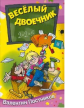

Веселый двоечник

Кто не знает Карандаша и Самоделкина? Придумал их известный детский писатель Юрий Дружков. Его сын Валентин Постников тоже стал писателем. Перед вами его самая смешная книга про современного мальчишку Семена Рыжикова и его друзей. В 2007 году В.Постников был удостоен премии "Эврика-2007" за весомый вклад в дело развития детской литературы. По повести "Шапка-невидимка", вошедшей в эту книгу, в 1973 году был снят одноименный мультфильм.